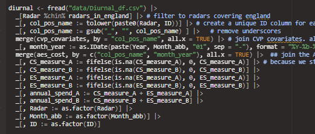

data.table
Misc
Syntax
DT[i, j, by] ## R: i j by ## SQL: where | order by select | update group by- Take data.table DT, subset rows using i, and manipulate columns with j, grouped according to by.
Packages
- {data.table.threads} - Finds the optimal/ideal speedup (efficiency factor) and thread count for each parallelizable function for your machine.
Resources
- Docs but it’s difficult to find anything.
- The philosophy of the package is highly dependent on syntax, so the reference page is not very useful in finding out how to perform certain operations as it usually is with other packages.
- The search doesn’t include the articles which contain a lot of information.
- Also, it’s an old package, and every old article, changelog, etc. is in the docs. So, if you find something you think answers your question, it may be that that syntax is outdated.
- Introduction to data.table (vignette)
- Function Reference (link)
- Syntax Reference (link)
- Symbol Reference (link)
- Docs but it’s difficult to find anything.
setDT(df)- Fast conversion of a data frame or list to a data.table without copying- Use when working with larger data sets that take up a considerable amount of RAM (several GBs) because the operation will modify each object in place, conserving memory.
as.data.table(matrix)should be used for matricesdat <- data.table(df)can be used for small datasets but there’s no reason to.setDT(copy(df))if you want to work with a copy of the df instead of converting the original object.
Creating a DT
Similar to tribble
rowwiseDT( A=,B=, C=, 1, "a",2:3, 2, "b",list(5) ) #> A B C #> <num> <char> <list> #> 1: 1 a 2,3 #> 2: 2 b 5
Chaining:
Syntax
DT[ ... ][ ... ][ ... ]
Piping
dt |> _[, do_stuff(column), by = group] |> _[, do_something_else(othr_col), by = othr_grp]The
_placeholder allows you to use R’s native pipe.Example
penguins[species == "Chinstrap"] |> _[ , .(mean_flipper_length = mean(flipper_length_mm)), by = .(sex, island)] # or penguins[species == "Chinstrap"] |> DT( , .(mean_flipper_length = mean(flipper_length_mm)), by = .(sex, island))Example

Symbols and Keywords
:=is the walrus operator.letis an alias. Think it acts likedplyr::mutateor maybedplyr::summarize. (Docs)DT[i, colC := mean(colB), by = colA] DT[i, `:=`(colC = sum(colB), colD = sum(colE)) by = colF] DT[i, let(colC = sum(colB), colD = sum(colE)), by = colF].EACHI- See Joins >> Joining and Aggregating for examples
- When i is a list (or data.frame or data.table),
DT[i, j, by = .EACHI]evaluates j for the groups inDTthat each row in i joins to. - That is, you can join (in i) and aggregate (in j) simultaneously. We call this grouping by each i
.Iis the row index. It’s an integer vector equal toseq_len(nrow(x))dt <- data.table( a = 1:3, b = 4:6 ) dt[, .(a, b, rowsum = sum(.SD)), by = .I] #> I a b rowsum #> <int> <int> <int> <int> #> 1: 1 1 4 5 #> 2: 2 2 5 7 #> 3: 3 3 6 9.Nholds the number of observations in the current group. It is particularly useful when combined withbySeems to act like
nrowfor a df orlengthfor a vector and is commonly used for counting the number of rowsIf
.Nis not wrapped withlistor.()(returns df), a vector is returnedIf a name is not provided for the column returned in
j, it’s named N automatically by recognizing the special symbol.N.Example: Count filtered rows
ans <- flights[origin == "JFK" & month == 6L, .N] ans #> [1] 8422- In the absence of group
byoperations, it simply returns the number of rows in the subset.
- In the absence of group
Example: Group by + count
ans <- flights[, .(.N), by = .(origin)] ans #> origin N #> <char> <int> #> 1: JFK 81483 #> 2: LGA 84433 #> 3: EWR 87400 ## or equivalently using a character vector in 'by' # ans <- flights[, .(.N), by = "origin"] ## or equivalently when there's only 1 col in j and by # ans <- flights[, .N, by = origin]
.NATURALis a join keywordSelects the columns to perform the match based on common column names in both tables.
Example:
Products[ProductReceived, on = .NATURAL]- Only the keyword has to be specified and not any joining variables
.SDis a data.table containing the Subset of DT’s Data for each group, excluding any columns used inby(orkeyby).If you don’t want to act on every column accept the grouping column (by), use the .SDcols to select the set of columns you want.
!can be used to not select columns:.SDcols = !c("unit", "type")
See Basic Usage >> Using by for more details
Example: Calculate the mean on multiple columns grouped by multiple columns
1flights[carrier == "AA", 2 lapply(.SD, mean), 3 by = .(origin, dest, month), 4 .SDcols = c("arr_delay", "dep_delay")] #> origin dest month arr_delay dep_delay #> <char> <char> <int> <num> <num> #> 1: JFK LAX 1 6.590361 14.2289157 #> 2: LGA PBI 1 -7.758621 0.3103448 #> 3: EWR LAX 1 1.366667 7.5000000 #> 4: JFK MIA 1 15.720670 18.7430168 #> 5: JFK SEA 1 14.357143 30.7500000 #> --- #> 196: LGA MIA 10 -6.251799 -1.4208633 #> 197: JFK MIA 10 -1.880184 6.6774194 #> 198: EWR PHX 10 -3.032258 -4.2903226 #> 199: JFK MCO 10 -10.048387 -1.6129032 #> 200: JFK DCA 10 16.483871 15.5161290- 1
- Filter on trips
- 2
- Compute the mean on every column that isn’t a grouping column
- 3
- Group the calculation by origin, dest, month
- 4
-
Actually not on all the non-grouping columns in
.SD, just these ones
{kind=link}
Basic Usage
Using i
- We can subset rows similar to a
data.frame- except you don’t have to useDT$repetitively since columns within the frame of adata.tableare seen as if they are variables. - We can also sort a
data.tableusingorder(), which internally usesdata.table’s fast order for performance. - We can do much more in
iby keying adata.table, which allows blazing fast subsets and joins. We will see this in the “Keys and fast binary search based subsets” and “Joins and rolling joins” vignette.
Using j
- Select columns the
data.tableway:DT[, .(colA, colB)]. - Select columns the
data.frameway:DT[, c("colA", "colB")]. - Compute on columns:
DT[, .(sum(colA), mean(colB))]. - Provide names if necessary:
DT[, .(sA =sum(colA), mB = mean(colB))]. - Combine with
i:DT[colA > value, sum(colB)].
Using by
- Using
by, we can group by columns by specifying a list of columns or a character vector of column names or even expressions. The flexibility ofj, combined withbyandimakes for a very powerful syntax. bycan handle multiple columns and also expressions.- We can
keybygrouping columns to automatically sort the grouped result. - We can use
.SDand.SDcolsinjto operate on multiple columns using already familiar base functions. Here are some examples:DT[, lapply(.SD, fun), by = ..., .SDcols = ...]- appliesfunto all columns specified in.SDcolswhile grouping by the columns specified inby.DT[, head(.SD, 2), by = ...]- return the first two rows for each group.DT[col > val, head(.SD, 1), by = ...]- combineialong withjandby.
Columns
Rename Columns
setnames(DT, old = c("SIMD2020v2_Income_Domain_Rank", "SIMD2020_Employment_Domain_Rank", "SIMD2020_Health_Domain_Rank", "SIMD2020_Education_Domain_Rank", "SIMD2020_Access_Domain_Rank", "SIMD2020_Crime_Domain_Rank", "SIMD2020_Housing_Domain_Rank", "CP_Name"), new = c("Income", "Employment", "Health", "Education", "Access", "Crime", "Housing", "areaname"))Get the first two rows of a column
ans <- flights[, head(.SD, 2), by = month] head(ans) # month year day dep_delay arr_delay carrier origin dest air_time distance hour # <int> <int> <int> <int> <int> <char> <char> <char> <int> <int> <int> # 1: 1 2014 1 14 13 AA JFK LAX 359 2475 9 # 2: 1 2014 1 -3 13 AA JFK LAX 363 2475 11 # 3: 2 2014 1 -1 1 AA JFK LAX 358 2475 8 # 4: 2 2014 1 -5 3 AA JFK LAX 358 2475 11 # 5: 3 2014 1 -11 36 AA JFK LAX 375 2475 8 # 6: 3 2014 1 -3 14 AA JFK LAX 368 2475 11
Filtering
Fast filtering mechanism; reorders rows (increasing) to group by the values in the key columns. Reordered rows make them easier to find and subset.
- All types of columns can be used except list and complex
Operations covered in this section
- Filtering
- Filter, select
- Filter, groupby, summarize
- If-Else
Set Keys - Says order in the increasing direction according to origin and then dest.
setkey(flights, origin, dest) head(flights) # year month day dep_delay arr_delay carrier origin dest air_time distance hour # 1: 2014 1 2 -2 -25 EV EWR ALB 30 143 7 # 2: 2014 1 3 88 79 EV EWR ALB 29 143 23 # 3: 2014 1 4 220 211 EV EWR ALB 32 143 15 # 4: 2014 1 4 35 19 EV EWR ALB 32 143 7 # 5: 2014 1 5 47 42 EV EWR ALB 26 143 8 # 6: 2014 1 5 66 62 EV EWR ALB 31 143 23Filter by origin == “JFK” and dest == “MIA”
flights[.("JFK", "MIA")] # year month day dep_delay arr_delay carrier origin dest air_time distance hour # 1: 2014 1 1 -1 -17 AA JFK MIA 161 1089 15 # 2: 2014 1 1 7 -8 AA JFK MIA 166 1089 9 # 3: 2014 1 1 2 -1 AA JFK MIA 164 1089 12 # 4: 2014 1 1 6 3 AA JFK MIA 157 1089 5 # 5: 2014 1 1 6 -12 AA JFK MIA 154 1089 17 # --- # 2746: 2014 10 31 -1 -22 AA JFK MIA 148 1089 16 # 2747: 2014 10 31 -3 -20 AA JFK MIA 146 1089 8 # 2748: 2014 10 31 2 -17 AA JFK MIA 150 1089 6 # 2749: 2014 10 31 -3 -12 AA JFK MIA 150 1089 5 # 2750: 2014 10 31 29 4 AA JFK MIA 146 1089 19Filter by only the first key column (origin):
flights["JFK"]Filter by only the second key column (dest)
flights[.(unique(), "MIA")] # year month day dep_delay arr_delay carrier origin dest air_time distance hour # 1: 2014 1 1 -5 -17 AA EWR MIA 161 1085 16 # 2: 2014 1 1 -3 -10 AA EWR MIA 154 1085 6 # 3: 2014 1 1 -5 -8 AA EWR MIA 157 1085 11 # 4: 2014 1 1 43 42 UA EWR MIA 155 1085 15 # 5: 2014 1 1 60 49 UA EWR MIA 162 1085 21 # --- # 9924: 2014 10 31 -11 -8 AA LGA MIA 157 1096 13 # 9925: 2014 10 31 -5 -11 AA LGA MIA 150 1096 9 # 9926: 2014 10 31 -2 10 AA LGA MIA 156 1096 6 # 9927: 2014 10 31 -2 -16 AA LGA MIA 156 1096 19 # 9928: 2014 10 31 1 -11 US LGA MIA 164 1096 15Filter by origin and dest values, then summarize and pull maximum of arr_delay
flights[.("LGA", "TPA"), max(arr_delay)] # [1] 486Filter by three origin values, one dest value, return the last row for each match
flights[.(c("LGA", "JFK", "EWR"), "XNA"), mult = "last"] # year month day dep_delay arr_delay carrier origin dest air_time distance hour # 1: 2014 5 23 163 148 MQ LGA XNA 158 1147 18 # 2: NA NA NA NA NA NA JFK XNA NA NA NA # 3: 2014 2 3 231 268 EV EWR XNA 184 1131 12- Filtering by more than one key value returns combinations of the first key and second key
- Remember setting a key reorders (increasing)
Count
Also see
.Nin Misc >> Symbols for basic examplesExample: Group by multiple variables and count
ans <- flights[carrier == "AA", .N, by = .(origin, dest)] head(ans) #> origin dest N #> <char> <char> <int> #> 1: JFK LAX 3387 #> 2: LGA PBI 245 #> 3: EWR LAX 62 #> 4: JFK MIA 1876 #> 5: JFK SEA 298 #> 6: EWR MIA 848Example: Order the group by + count
ans <- flights[carrier == "AA", .N, by = .(origin, dest)][order(origin, -dest)] head(ans, 10) #> origin dest N #> <char> <char> <int> #> 1: EWR PHX 121 #> 2: EWR MIA 848 #> 3: EWR LAX 62 #> 4: EWR DFW 1618 #> 5: JFK STT 229 #> 6: JFK SJU 690 #> 7: JFK SFO 1312 #> 8: JFK SEA 298 #> 9: JFK SAN 299 #> 10: JFK ORD 432- The
-destsays when ordering by dest, do it in descending order
- The
Example: Count by condition
ans <- flights[, .N, .(dep_delay>0, arr_delay>0)] ans #> dep_delay arr_delay N #> <lgcl> <lgcl> <int> #> 1: TRUE TRUE 72836 #> 2: FALSE TRUE 34583 #> 3: FALSE FALSE 119304 #> 4: TRUE FALSE 26593- Other columns can be included in the expression ,
DT[, .N, by = .(a, b>0)]
- Other columns can be included in the expression ,
Summarize
Example: groupby state + min, max, mean
D[ ,.(mean = mean(measurement), min = min(measurement), max = max(measurement)), by=state] # Supposedly faster rbindlist(lapply(unique(D$state), \(x) data.table(state = x, y[state == x, .(mean(measurement), min(measurement), max(measurement)) ] )))Filter by origin and dest values, then select a arr.delay column:
flights[.("LGA", "TPA"), .(arr_delay)]Filter by origin value, group_by month, summarize( max(dep_delay))
ans <- flights["JFK", max(dep_delay), keyby = month] head(ans) # month V1 # 1: 1 881 # 2: 2 1014 # 3: 3 920 # 4: 4 1241 # 5: 5 853 # 6: 6 798 key(ans) # [1] "month"- keyby groups and sets the key to month
Across
# Across all columns DT[, names(.SD) := lapply(.SD, fun)] # Across all numeric columns DT[, names(.SD) := lapply(.SD, fun), .SDcols = is.numeric]
Joins
Misc
Syntax
- 1
- x is the secondary data.table, i is the primary data.table, list, or dataframe
- 2
-
on takes a character vector with the common variables to be joined on (e.g.
c(var1, var2)) or list defining the matching logic, e.g.list(var1 = var2) - 3
- If nomatch = NULL, only rows linked to the x and i tables are returned
- For join operations, it is recommended to pass the on and nomatch arguments by name to avoid using j and by when they are not needed.
See Misc>> Symbols >>
.Naturalfor details on a Natural joinKeyed Join is a join where both tables have the same columns defined as keys
Products[ProductReceived]- No join variables have to be specified
Left Join
ProductReceived[Products, on = list(product_id = id)]- All rows in ProductReceived are kept
- product_id belongs to ProductReceived and id belongs to Products
- For a Right Join, order of the tables and join variables are reversed
Inner Join
# First Table Products[ProductReceived, on = c("id" = "product_id"), nomatch = NULL]- Keeps only rows matched in both tables
- id belongs to Products and product_id to ProductReceived
Chaining Joins
NewTax[Products, 1 on = c("unit", "type") ][, ProductReceived[.SD, 2 on = list(product_id = id)], 3 .SDcols = !c("unit", "type")] # id date product_id count tax_prop name price # <int> <IDat> <int> <int> <num> <char> <num> # 1: 2 2024-01-15 1 100 NA banana 0.63 # 2: 4 2024-01-29 1 150 NA banana 0.63 # 3: 6 2024-02-12 1 150 NA banana 0.63 # 4: 9 2024-03-04 1 100 NA banana 0.63 # 5: 5 2024-02-05 2 50 NA carrots 0.89 # 6: 7 2024-02-19 2 150 NA carrots 0.89 # 7: 8 2024-02-26 2 100 NA carrots 0.89 # 8: 10 2024-03-11 3 150 0.65 popcorn 2.99 # 9: NA <NA> 4 NA 0.20 soda 1.49 # 10: 1 2024-01-08 NA 150 0.65 toothpaste 2.99- 1
- First, the NewTax and Products tables are joined two common variables: unit and type
- 2
- Then, the resulting table is joined to ProductRecieved where product_id belongs to ProductReceived and id belongs to previously joined table (originally Products)
- 3
-
The
.SDkeyword refers to the previously joined table’s columns. .SDcols subsets those columns by removing unit and type.
Non-Equi Join
Where the condition for matching rows is not based on equality, but on other comparison operators like <, >, <=, or >=
Example: How many of product “2” were received before a certain date
ProductSalesProd2 = ProductSales[product_id == 2L] #> id date product_id count #> <int> <IDat> <int> <int> #> 2: 2 2024-01-11 2 150 #> 7: 7 2024-02-06 2 150 ProductReceivedProd2 = ProductReceived[product_id == 2L] #> id date product_id count #> <int> <IDat> <int> <int> #> 5: 5 2024-02-05 2 50 #> 7: 7 2024-02-19 2 150 #> 8: 8 2024-02-26 2 100 # ProductReceivedProd2[ProductSalesProd2, # on = "product_id", # allow.cartesian = TRUE] #> id date product_id count i.id i.date i.count #> <int> <IDat> <int> <int> <int> <IDat> <int> #> 1: 5 2024-02-05 2 50 2 2024-01-11 150 #> 2: 7 2024-02-19 2 150 2 2024-01-11 150 #> 3: 8 2024-02-26 2 100 2 2024-01-11 150 #> 4: 5 2024-02-05 2 50 7 2024-02-06 150 #> 5: 7 2024-02-19 2 150 7 2024-02-06 150 #> 6: 8 2024-02-26 2 100 7 2024-02-06 150 ProductReceivedProd2[ProductSalesProd2, on = "product_id", allow.cartesian = TRUE ][date < i.date] #> id date product_id count i.id i.date i.count #> <int> <IDat> <int> <int> <int> <IDat> <int> #> 1: 5 2024-02-05 2 50 7 2024-02-06 150 # or equivalently ProductReceivedProd2[ProductSalesProd2, on = list(product_id, date < date), nomatch = NULL] #> id date product_id count i.id i.count #> <int> <IDat> <int> <int> <int> <int> #> 1: 5 2024-02-06 2 50 7 150- To show the process of how the join is made,
allow.cartesianis set the TRUE which allows the combining of each row from one table with every row from the other table which is called a Cross Join- Only use with subsetted tables as necessarily results in duplicated values and thus a larger table than the original
- The middle table with the code that I’ve commented out shows the results of this.
- It allows us to compare variable values of both tables given a common variable value
- In this example, product sales dates (date) and product received dates (i.date) are compared given
product_id == 2 - nomatch = NULL is specified because this is a right-join and some rows with NA values can be returned
- To show the process of how the join is made,
Joining and Aggregating with
.EACHISee Misc >> Symbols and Keywords >>
EACHIfor a descriptionEACHIrequires j to be specified which is where the aggregating takes placeExample: Group by and summarize
dt1 = ProductReceived[ Products, on = c("product_id" = "id"), by = .EACHI, j = .(total_value_received = sum(price * count)) ] # or equivalently dt2 = ProductReceived[ Products, on = c("product_id" = "id"), ][, .(total_value_received = sum(price * count)), by = "product_id" ]- Joins the two tables, groups by the joining variable, and summarizes with a calculation.
Example: Non-Equi (source)
tab1[tab2, on = .(cat_var, start_date_tab1 >= start_date_tab2, start_date_tab1 < fin_date_tab2), by = .EACHI, j = .N]- Joins tables tab1 and tab2
- Filters the data according to date variables from both tables
- Counts each category in cat_var in the filtered data
- cat_var should be present both tables (I think)
Rolling Join
Allows you to match rows based on the nearest value in a sorted column, typically a date or time column.
This is valuable when you need to align data from different sources that may not have exactly matching timestamps, or when you want to carry forward the most recent value.
Example: In financial data, you might use a rolling join to assign the most recent stock price to each transaction, even if the price updates and transactions don’t occur at the exact same times.
Example: Match sales with the most recent product information.
ProductPriceHistory[ProductSales, on = .(product_id, date), roll = TRUE, j = .(product_id, date, count, price)] # product_id date count price # <int> <IDat> <int> <num> # 1: 7 2024-01-08 50 NA # 2: 2 2024-01-11 150 0.79 # 3: 1 2024-01-18 50 0.59 # 4: 1 2024-01-25 100 0.59 # 5: 3 2024-01-26 100 NA # 6: 3 2024-02-02 150 NA # 7: 2 2024-02-06 150 0.89 # 8: 7 2024-02-15 150 NA # 9: 1 2024-02-27 150 0.63 # 10: 1 2024-03-08 50 0.65- product_id and date are common to both tables
.()is used instead ofc()for some reason
- j is explicitly used to select specific columns
- To see only the matching cases we would need to add the argument nomatch = NULL to perform an inner rolling join.
- product_id and date are common to both tables
Conditionals
Ifelse using hour
setkey(flights, hour) # hour has values 0-24 flights[.(24), hour := 0L]ifelse(hour == 24, 0, TRUE)- Consequence: since a key column value has changed, hour is no longer a key
Pivoting
pivot_longer and melt
Basic
relig_income |> pivot_longer(!religion, # keep religion as a column names_to = "income", # desired name for new column values_to = "count") # what data goes into the new column? melt(DT, id.vars = "religion", variable.name = "income", value.name = "count", variable.factor = FALSE) # added to keep output consistent with tidyrColumns have a common prefix and missing values are dropped
billboard |> pivot_longer( cols = starts_with("wk"), names_to = "week", names_prefix = "wk", values_to = "rank", values_drop_na = TRUE ) melt(DT, measure.vars = patterns("^wk"), variable.name = "week", value.name = "rank", na.rm = TRUE)Multiple variables stored in column names
who <- data.table(id = 1, new_sp_m5564 = 2, newrel_f65 = 3) # id new_sp_m5564 newrel_f65 # <num> <num> <num> # 1: 1 2 3 melt(who, measure.vars = measure(diagnosis, gender, ages, pattern = "new_?(.*)_(.)(.*)")) # id diagnosis gender ages value # <num> <char> <char> <char> <num> # 1: 1 sp m 5564 2 # 2: 1 rel f 65 3 # with tidyr who |> tidyr::pivot_longer( cols = !id, names_to = c("diagnosis", "gender", "age"), names_pattern = "new_?(.*)_(.)(.*)", values_to = "count") # # A tibble: 2 × 5 # id diagnosis gender age count # <dbl> <chr> <chr> <chr> <dbl> # 1 1 sp m 5564 2 # 2 1 rel f 65 3tstrsplitis DT’stidyr::separate
Matrix to long
anscombe |> pivot_longer( everything(), cols_vary = "slowest", names_to = c(".value", "set"), names_pattern = "(.)(.)" ) DT[,melt(.SD, variable.name = "set", value.name = c("x","y"), variable.factor = FALSE, measure.vars = patterns("^x","^y"))]
pivot_wider and dcast
Data in examples
fish_encounters
## # A tibble: 114 × 3 ## fish station seen ## <fct> <fct> <int> ## 1 4842 Release 1 ## 2 4842 I80_1 1 ## 3 4842 Lisbon 1 ## 4 4842 Rstr 1 ## 5 4842 Base_TD 1 ## 6 4842 BCE 1 ## 7 4842 BCW 1 ## 8 4842 BCE2 1 ## 9 4842 BCW2 1 ## 10 4842 MAE 1 ## # … with 104 more rows
Basic
fish_encounters |> pivot_wider(names_from = station, values_from = seen) dcast(DT, fish ~ station, value.var = "seen")Fill in missing values
fish_encounters |> pivot_wider(names_from = station, values_from = seen, values_fill = 0) dcast(DT, fish ~ station, value.var = "seen", fill = 0) # alt DT[, dcast(.SD, fish ~ station, value.var = "seen", fill = 0)]- Rather than have the DT inside dcast, we can use .SD and have dcast inside DT, which is helpful for further chaining. (see applied to
meltabove)
- Rather than have the DT inside dcast, we can use .SD and have dcast inside DT, which is helpful for further chaining. (see applied to
Generate column names from multiple variables
us_rent_income |> pivot_wider( names_from = variable, values_from = c(estimate, moe) ) dcast(DT, GEOID + NAME ~ variable, value.var = c("estimate","moe")) # alt dcast(DT, ... ~ variable, value.var = c("estimate","moe"))- Alternative: pass “…” to indicate all other unspecified columns
Specify a different names separator
us_rent_income |> pivot_wider( names_from = variable, names_sep = ".", values_from = c(estimate, moe) ) dcast(DT, GEOID + NAME ~ variable, value.var = c("estimate","moe"), sep = ".") # alt DT[, dcast(.SD, GEOID + NAME ~ variable, value.var = c("estimate","moe"), sep = ".")]- Alternative: Rather than have the DT inside dcast, we can use .SD and have dcast inside DT, which is helpful for further chaining. (see applied to
meltabove)
- Alternative: Rather than have the DT inside dcast, we can use .SD and have dcast inside DT, which is helpful for further chaining. (see applied to
Controlling how column names are combined
us_rent_income |> pivot_wider( names_from = variable, values_from = c(estimate, moe), names_vary = "slowest" ) |> names() DT[, dcast(.SD, GEOID + NAME ~ variable, value.var = c("estimate","moe")) ][,c(1:3,5,4,6)] |> names() ## [1] "GEOID" "NAME" "estimate_income" "moe_income" ## [5] "estimate_rent" "moe_rent"- See {tidyr::pivot_wider} docs and the names_vary arg
Aggregation
warpbreaks %>% pivot_wider( names_from = wool, values_from = breaks, values_fn = mean ) dcast(DT, tension ~ wool, value.var = "breaks", fun = mean) # alt DT[, dcast(.SD, tension ~ wool, value.var = "breaks", fun = mean)] ## # A tibble: 3 × 3 ## tension A B ## <fct> <dbl> <dbl> ## 1 L 44.6 28.2 ## 2 M 24 28.8 ## 3 H 24.6 18.8- Alternative: Rather than have the DT inside
dcast, we can use .SD and havedcastinside DT, which is helpful for further chaining. (see applied tomeltabove)
- Alternative: Rather than have the DT inside
tidyr
separateviatstrsplitdt <- data.table(x = c("00531725 Male 2021 Neg", "07640613 Female 2020 Pos")) # x # <char> # 1: 00531725 Male 2021 Neg # 2: 07640613 Female 2020 Pos cols <- c("personID", "gender", "year", "covidTest") dt[, tstrsplit(x, split = " ", names = cols, type.convert = TRUE)] # personID gender year covidTest # <int> <char> <int> <char> # 1: 531725 Male 2021 Neg # 2: 7640613 Female 2020 Pos dt[, tstrsplit(x, split = " ", names = cols, type.convert = list(as.character = 1, as.factor = c(2, 4), as.integer = 3) )] # personID gender year covidTest # <char> <fctr> <int> <fctr> # 1: 00531725 Male 2021 Neg # 2: 07640613 Female 2020 Pos
User Defined Functions
env
iris_dt <- as.data.table(iris) square = function(x) x^2 iris_dt[filter_col %in% filter_val, .(var1, var2, out = outer(inner(var1) + inner(var2))), by = by_col, env = list( outer = "sqrt", inner = "square", var1 = "Sepal.Length", var2 = "Sepal.Width", out = "Sepal.Hypotenuse", filter_col = "Species", filter_val = I("versicolor"), by_col = "Species" )] |> head(n = 3) # Species Sepal.Length Sepal.Width Sepal.Hypotenuse # <fctr> <num> <num> <num> # 1: versicolor 7.0 3.2 7.696753 # 2: versicolor 6.4 3.2 7.155418 # 3: versicolor 6.9 3.1 7.564390- Variables are included in the standard i, j, and by syntax
- env contains the (quoted) variable values
- i.e. argument values in the typical R udf syntax (
function(x = val1)) - Can use other UDFs as values which is demonstrated by inner = “square”
- i.e. argument values in the typical R udf syntax (
Recipes
Operations covered in this section
- group_by, summarize (and arrange)
- crosstab
group_by,summarize(andarrange)dt_res <- dtstudy[, .(n = .N, avg = round(mean(y), 1)), keyby = .(male, over65, rx)] tb_study <- tibble::as_tibble(dtstudy) tb_res <- tb_study |> summarize(n = n(), avg = round(mean(y), 1), .by = c(male, over65, rx)) |> arrange(male, over65, rx)- dt automatically orders by the grouping variables, so to get the exact output, you have to add an
arrange
- dt automatically orders by the grouping variables, so to get the exact output, you have to add an
Crosstab using
cube(Titanic5 dataset)# Note that the mean of a 0/1 variable is the proportion of 1s mn <- function(x) mean(x, na.rm=TRUE) # Create a function that counts the number of non-NA values Nna <- function(x) sum(! is.na(x)) cube(d, .(Proportion=mn(survived), N=Nna(survived)), by=.q(sex, class), id=TRUE) #> grouping sex class Proportion N #> 1: 0 female 1 0.9652778 144 #> 2: 0 male 1 0.3444444 180 #> 3: 0 male 2 0.1411765 170 #> 4: 0 female 2 0.8867925 106 #> 5: 0 male 3 0.1521298 493 #> 6: 0 female 3 0.4907407 216 #> 7: 1 female NA 0.7274678 466 #> 8: 1 male NA 0.1909846 843 #> 9: 2 <NA> 1 0.6203704 324 #> 10: 2 <NA> 2 0.4275362 276 #> 11: 2 <NA> 3 0.2552891 709 #> 12: 3 <NA> NA 0.3819710 1309